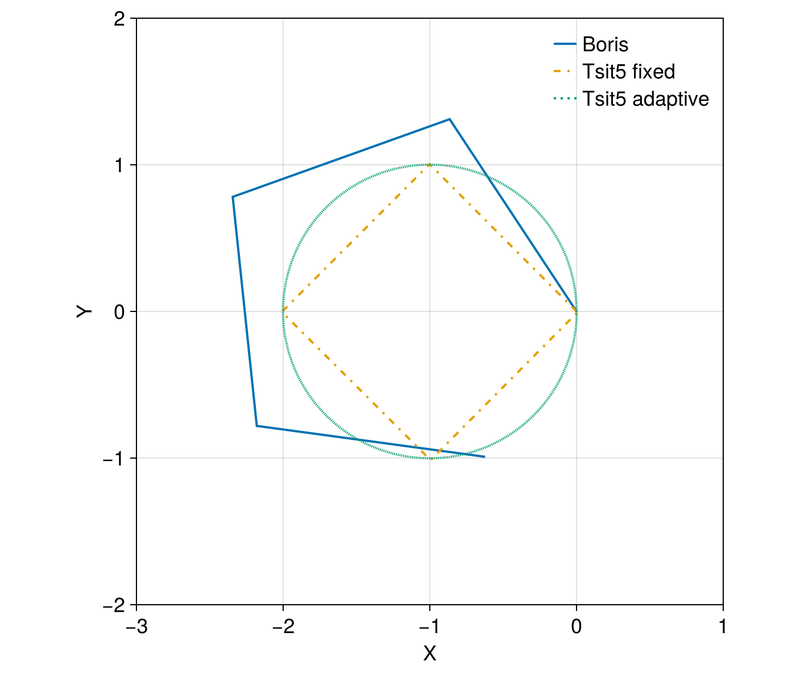
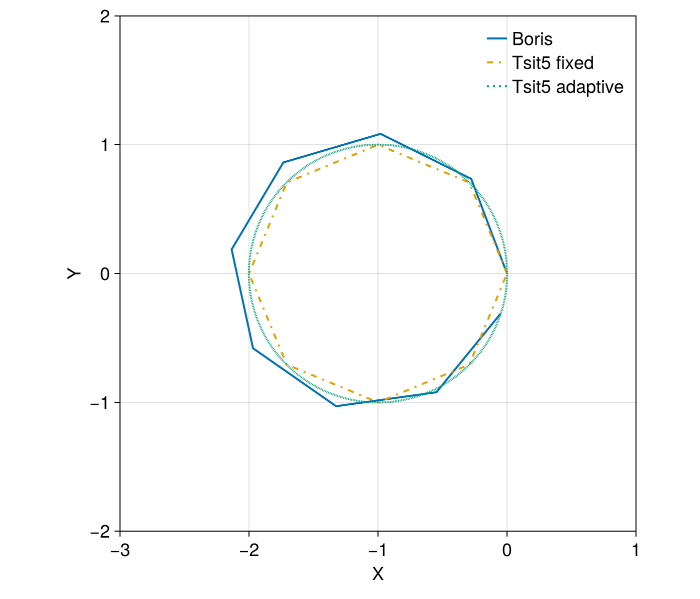
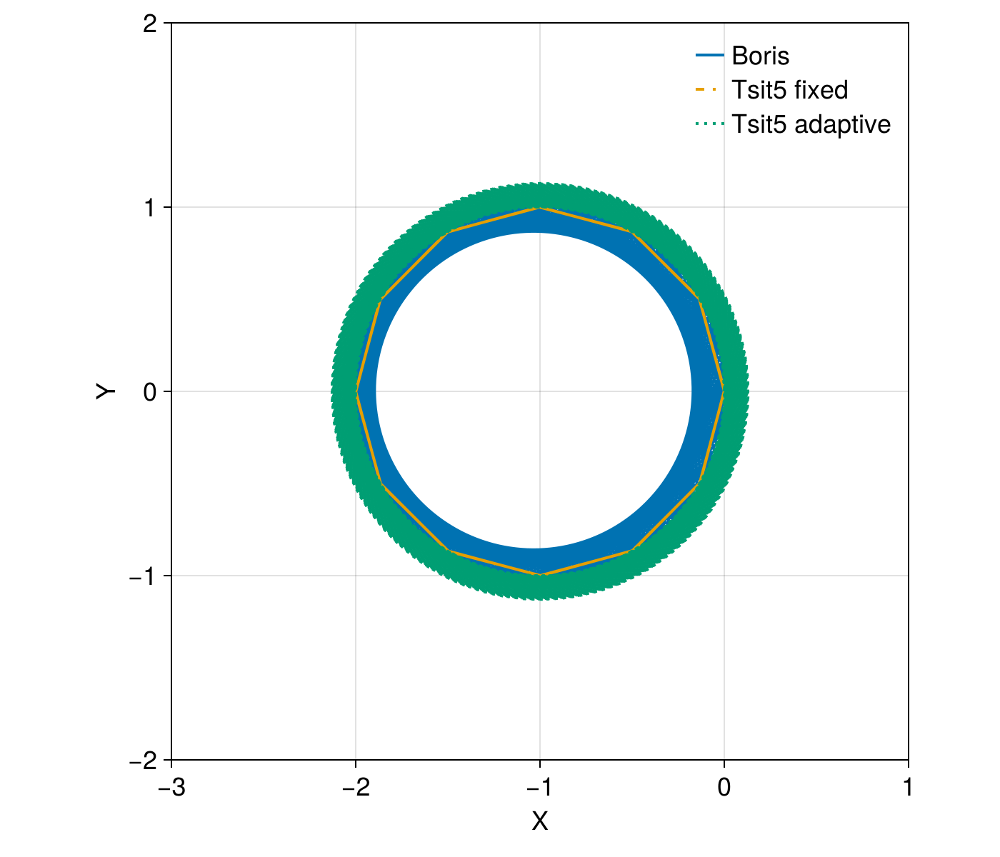

Boris method


This example demonstrates a single electron motion under a uniform B field. The E field is assumed to be zero such that there is no particle acceleration. We use the Boris method for phase space conservation under a fixed time step. This is compared against other ODE general algorithms for performance and accuracy.
using TestParticle, OrdinaryDiffEqTsit5, StaticArrays
using TestParticle: ZeroField, get_BField
import TestParticle as TP
using CairoMakie
function plot_trajectory(sol_boris, sol1, sol2)
f = Figure(size = (700, 600), fontsize = 18)
ax = Axis(f[1, 1], aspect = 1, limits = (-3, 1, -2, 2),
xlabel = "X",
ylabel = "Y")
idxs = (1, 2)
l0 = lines!(ax, sol_boris[1]; idxs, linewidth = 2, label = "Boris")
l1 = lines!(ax, sol1; idxs,
color = Makie.wong_colors()[2], linewidth = 2, linestyle = :dashdot, label = "Tsit5 fixed")
l2 = linesegments!(ax, sol2; idxs,
color = Makie.wong_colors()[3], linewidth = 2, linestyle = :dot, label = "Tsit5 adaptive")
scale!(ax.scene, invrL, invrL)
axislegend(position = :rt, framevisible = false)
f
end
const Bmag = 0.01
uniform_B(x) = SA[0.0, 0.0, Bmag]
zero_E = ZeroField()
x0 = [0.0, 0.0, 0.0]
v0 = [0.0, 1e5, 0.0]
stateinit = [x0..., v0...]
param = prepare(zero_E, uniform_B, species = Electron)
# Reference parameters
const tperiod = 2π / (abs(param[1]) *
sqrt(sum(x -> x^2, get_BField(param)([0.0, 0.0, 0.0], 0.0))))
const rL = sqrt(v0[1]^2 + v0[2]^2 + v0[3]^2) / (abs(param[1]) * Bmag)
const invrL = 1 / rL;We first trace the particle for one period with a discrete time step of a quarter period.
tspan = (0.0, tperiod)
dt = tperiod / 4
prob = TraceProblem(stateinit, tspan, param)
sol_boris = TP.solve(prob; dt, savestepinterval = 1);Let's compare against the default ODE solver Tsit5 from DifferentialEquations.jl, in both fixed time step mode and adaptive mode:
prob = ODEProblem(trace!, stateinit, tspan, param)
sol1 = solve(prob, Tsit5(); adaptive = false, dt, dense = false, saveat = dt);
sol2 = solve(prob, Tsit5());
# Visualization
f = plot_trajectory(sol_boris, sol1, sol2)
It is clear that the Boris method comes with larger phase errors ($\mathcal{O}(\Delta t)$) compared with Tsit5. The phase error gets smaller using a smaller dt:
dt = tperiod / 8
prob = TraceProblem(stateinit, tspan, param)
sol_boris = TP.solve(prob; dt, savestepinterval = 1);
prob = ODEProblem(trace!, stateinit, tspan, param)
sol1 = solve(prob, Tsit5(); adaptive = false, dt, dense = false, saveat = dt);
# Visualization
f = plot_trajectory(sol_boris, sol1, sol2)
The Boris pusher shines when we do long time tracing, which is fast and conserves energy:
tspan = (0.0, 200*tperiod)
dt = tperiod / 12
prob_boris = TraceProblem(stateinit, tspan, param)
prob = ODEProblem(trace!, stateinit, tspan, param)
sol_boris = TP.solve(prob_boris; dt, savestepinterval = 10);
sol1 = solve(prob, Tsit5(); adaptive = false, dt, dense = false, saveat = dt);
sol2 = solve(prob, Tsit5());
# Visualization
f = plot_trajectory(sol_boris, sol1, sol2)
Fixed time step Tsit5() is ok, but adaptive Tsit5() is pretty bad for long time evolutions. The change in radius indicates change in energy, which is sometimes known as numerical heating.
Another aspect to compare is performance:
@time sol_boris = TP.solve(prob_boris; dt, savestepinterval = 10)[1];
@time sol1 = solve(prob, Tsit5(); adaptive = false, dt, dense = false, saveat = dt);
@time sol2 = solve(prob, Tsit5()); 0.000093 seconds (261 allocations: 21.703 KiB)
0.000769 seconds (4.88 k allocations: 376.812 KiB)
0.000764 seconds (23.68 k allocations: 1.329 MiB)
We can extract the solution (x, y, z, vx, vy, vz) at any given time by performing a linear interpolation:
t = tspan[2] / 2
sol_boris(t)6-element StaticArraysCore.MVector{6, Float64} with indices SOneTo(6):
-3.911568318655031e-5
-5.5137270837814596e-5
0.0
99639.26547015733
8486.269885387323
0.0The Boris method is faster and consumes less memory. However, in practice, it is pretty hard to find an optimal algorithm. When calling OrdinaryDiffEq.jl, we recommend using Vern9() as a starting point instead of Tsit5(), especially combined with adaptive timestepping.
This page was generated using DemoCards.jl and Literate.jl.